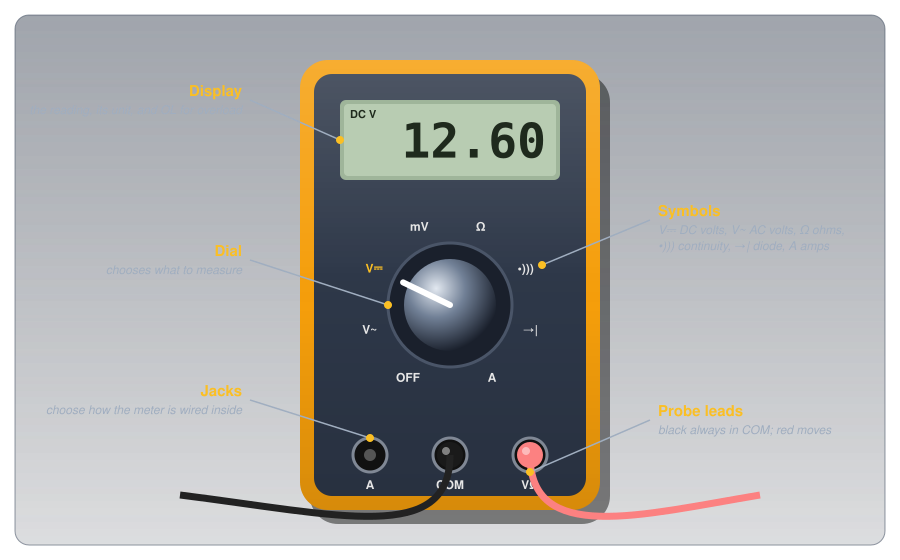
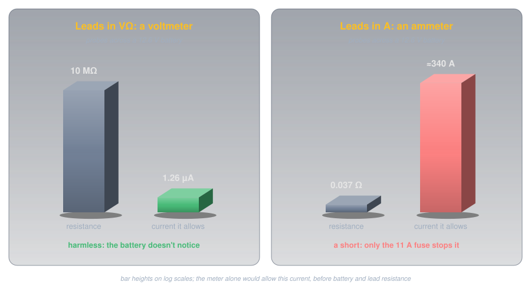
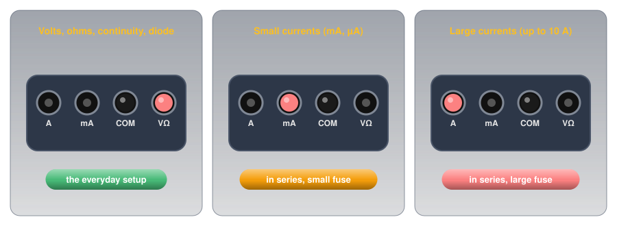
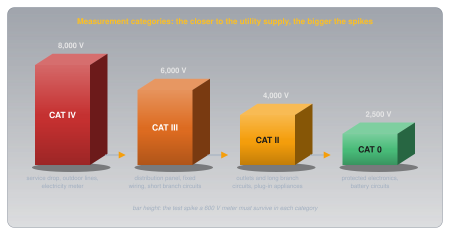
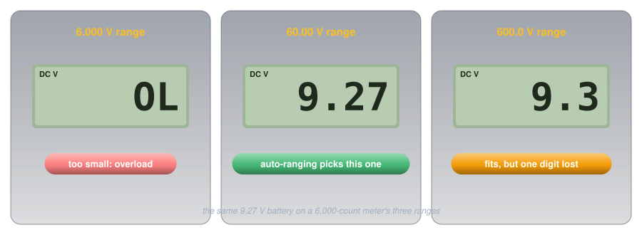

Using a Multimeter🔗
Practical Tools · Beginner
This article is part of the Practical Tools section. Each measurement is taught in the article for the quantity it measures (voltage, current, resistance, continuity). This page covers the meter itself: how it's built, how it protects you, and how to choose one.
Touch a multimeter's probes across a 12.6 V car battery and the display reads 12.60 while the meter draws about a millionth of an amp. Move the red lead one jack over, touch the same two terminals with the dial still on volts, and there's a snap, a spark at the probe tip, and a meter that no longer reads anything. Same meter, same battery, same dial setting.
Two ideas explain it:
- The jacks decide what the meter is. With the red lead in the voltage jack, the meter is an enormous resistance placed across whatever it touches. In the current jack, it's a resistance of a few hundredths of an ohm, close to a plain wire. The dial only chooses what the display shows.
- The fuse and the measurement category are what make a mistake survivable. Every meter will eventually be connected wrongly. What happens next depends on parts most people never look at when they buy one.
The car battery puzzle is solved in the first half, and the parts that rescue it in the second.
Anatomy of a Multimeter🔗
Every handheld digital multimeter has the same four parts, whatever its price.

- The display shows the reading and its unit, and OL (overload) when the value is too big for the range.
- The dial selects the function. The symbols are standard across brands: V with a straight line (⎓) for DC volts, V with a wave (~) for AC volts, Ω for resistance, a sound-wave symbol for the continuity beeper, a diode symbol for the diode test, and A (with mA or µA on some meters) for current.
- The jacks take the probe leads. COM (common) is the black lead's home and it never moves. The red lead goes in the VΩ jack for nearly everything, and moves to an A or mA jack only to measure current.
- The probe leads connect the meter to the circuit. Their insulation and finger guards carry their own safety rating, which matters as much as the meter's.
Each function is taught where its quantity is:
-
V⎓ and V~: volts
Probes across a part, circuit intact. Measuring Voltage, and for AC, what the reading means in AC vs DC.
-
A, mA: amps
Circuit broken, meter in the path, red lead moved. Measuring Current.
-
Ω: ohms
Power off, part isolated. Measuring Resistance.
-
•))): continuity
A beep for a complete path. Continuity.
-
→|: diode test
Forward voltage in one direction, OL in the other. Measuring a Diode.
-
Extras: capacitance, frequency, temperature
On some meters. Measuring Capacitance covers the first.
Idea One: The Jacks Decide What the Meter Is🔗
Measuring Current explained why the two jobs need opposite designs: a voltmeter must barely disturb the circuit it bridges, and an ammeter must barely disturb the loop it joins. A real meter's specifications show how far apart those two designs are. The Fluke 114–117 specifications give a DC volts input impedance of more than 10 MΩ, and a "burden voltage" on the 10 A input of 37 mV per amp, which works out to about 0.037 Ω. The two roles are some 270 million times apart.

Definition: Burden Voltage
The voltage an ammeter itself takes from the circuit when current flows through it, because its internal resistance isn't quite zero. Dividing the burden voltage per amp by one amp gives the meter's resistance on that input. A good ammeter's burden is small enough not to change the current it's measuring.
The Jacks Choose the Role🔗
Which of the two the meter becomes is set by where the red lead is plugged in, not by the dial. Fluke's guide to meter safety, ABCs of Multimeter Safety, makes the point directly: with the leads left in the amps terminals, "it doesn't matter if the selector dial is turned to volts; the leads are still physically connected to a low-impedance circuit."

The Car Battery, Solved🔗
With the red lead in the A jack, touching the probes across 12.6 V puts about 0.037 Ω straight across the battery. The meter alone would allow
The battery's own internal resistance and the leads hold the real figure lower, but a car battery is built to deliver hundreds of amps to a starter motor, so it's still far beyond anything the meter is rated for. The spark is that current arriving. What stops it is the fuse behind the A jack, which is idea two.
Idea Two: Fuses and Categories Make Mistakes Survivable🔗
Leaving the red lead in the current jack is the most common way people damage meters, and measuring near mains wiring is the most dangerous. Two features decide how those go: the fuses inside, and the measurement category printed beside the jacks.
The Fuse Behind the Current Jacks🔗
Each current jack has its own fuse. On the Fluke 115 and 117, the A input's fuse is rated 11 A, 1000 V, with an interrupting rating of 17 kA. The first number is the current that blows it. The last is the part people overlook: the largest fault current the fuse can safely break. An ordinary fuse of the same amp rating may not be able to break a high-energy fault at all. That's why the Fluke guide says to "use only the high-energy fuses specified by the manufacturer," which "are rated at a voltage and with a short circuit interrupting capacity designed for your safety," and never a substitute.
So when a meter that worked yesterday reads zero on its current setting, check the fuse first: the meter's manual describes how. And before relying on a meter, check that its current inputs are fused at all. The jack markings usually say so (for example "10A MAX FUSED"); a budget meter with an unfused 10 A input has nothing between a mistake and its own circuit board.
Open Circuits, Short Circuits, and Fuses explains how a fuse works. Inside a meter it's doing the same job, protecting the meter and the person holding it from the meter's own low resistance.
Measurement Categories🔗
The second protection is against something a battery never produces: brief voltage spikes on mains wiring. Fluke's guide names motors, capacitors, and power-conversion equipment as common sources, along with lightning on outdoor lines, and says the spikes "can reach peak values in the many thousands of volts." A meter that's connected when one arrives has to survive it without its insides arcing over. The international safety standard for meters, IEC 61010, groups locations into measurement categories by how large those spikes can be, and the further a point is from the utility supply, the smaller they are.

| Category | Where | Test spike for a 600 V meter |
|---|---|---|
| CAT IV | The service drop, outdoor lines, the electricity meter | 8,000 V |
| CAT III | The distribution panel, fixed wiring, short branch circuits | 6,000 V |
| CAT II | Outlets and long branch circuits, plug-in appliances | 4,000 V |
| CAT 0 | Protected electronics, battery-powered circuits | 2,500 V |
Two consequences follow:
- The category matters more than the voltage. Fluke's guide compares a CAT III 600 V meter with a CAT II 1000 V one: both are tested with 6,000 V spikes, but the CAT III test source has a sixth of the resistance (2 Ω against 12 Ω), so it delivers six times the current. The CAT III meter is the better-protected one despite the lower voltage on its label.
- A rating means nothing without independent testing. Manufacturers can self-certify a category. Look for the mark of an independent testing laboratory, such as CSA, UL, or TÜV, rather than wording like "designed to meet."
Every circuit on this site is battery-powered and sits in the lowest category. The rating matters the day a meter is used near the house wiring, which is also the day it most needs to be right.
Ranges, Resolution, and Accuracy🔗
A digital meter's display has a fixed number of counts: the largest number it can show, ignoring the decimal point. The Fluke 114–117 are 6,000-count meters, so their DC volts ranges are 6.000 V, 60.00 V, and 600.0 V. Each range trades size for detail: the bigger the range, the fewer digits after the decimal point.

An auto-ranging meter picks that range itself, which is why it's the right choice for a first meter. A manual-ranging meter makes you choose with the dial: start on the highest range and step down until the reading has as many digits as it can show without OL.
Every reading also carries an accuracy, given as a percentage of the reading plus a number of counts. For DC volts the Fluke 114–117 specify ±(0.5% + 2 counts). On the 60.00 V range, reading 9.27 V:
So the true voltage is somewhere from about 9.20 V to 9.34 V. The last digit on the display is resolution, not certainty; that's worth remembering when a reading disagrees with a calculation by a hundredth of a volt.
The same specification sheet explains a puzzle new meter owners often meet: on AC volts, a true-RMS meter can show a small, wandering, non-zero number with its probes touching nothing. Its AC ranges are only specified from 1% of the range upward, so a few counts of noise on an open input are normal, not a fault.
Habits That Keep Readings Honest🔗
Most bad readings and most damaged meters come from a handful of habits.
- Set the jacks first, then the dial, then touch. Before the probes touch anything, look at where the red lead is plugged in. That's the step the car battery puzzle skipped.
- Return to volts after measuring current. Move the red lead back to VΩ and the dial back to volts as soon as a current measurement is done, so the meter's next use starts safe.
- Measure resistance with the power off. On the Ω setting the meter supplies its own small test current (under 350 µA on the Fluke 114–117 meters) and computes resistance from it. Any other voltage in the circuit corrupts the reading and can damage the meter.
- Short the probes before a low resistance reading. Touch the probe tips together on the Ω setting and note what it shows. That's the leads' own resistance, to subtract from small readings.
- Test the meter on something known. Before trusting a reading that says "dead," check the meter on a known live source, then the circuit, then the known source again. Fluke's guide calls this the three-point test: it proves the meter worked before and after the measurement that mattered.
- Change the meter's battery when it says so. A low internal battery can make readings drift before the meter stops working altogether.
Choosing a Meter🔗
Price is a poor guide to what matters in a multimeter. These features are the ones worth checking, roughly in order:
-
Fused current inputs
Why it matters: the fuse is all that stands between the most common mistake and a destroyed meter. Look for "FUSED" by each current jack.
-
An independently tested category
Why it matters: even if every project is battery-powered, a meter is eventually used near mains. CAT III covers everything up to a home's distribution panel.
-
Auto-ranging
Why it matters: one less setting to get wrong, and the best resolution chosen automatically.
-
A continuity beeper
Why it matters: checking wiring without looking at the display. The Fluke 115, for example, beeps for anything under 20 Ω.
-
True-RMS
Why it matters: correct AC readings for waves that aren't pure sines (AC vs DC explains why that's different).
-
Diode test and capacitance
Why it matters: two quick checks that otherwise need a separate tool.
Safety🔗
The meter is a safety device as much as a measuring one, and it only protects someone who uses it within its limits.
Mains Measurements Need Rating and Training
A wall outlet can drive a lethal current through the body, and the mains wiring behind it carries spikes that a cheap meter can't survive. Measuring mains takes a meter and leads rated for the category (CAT II for an outlet, CAT III at the panel), from an independent laboratory, and someone trained to do it. Every project on this site runs on batteries or a USB supply; leave mains measurements to an electrician.
Damaged Leads, Damaged Meter
Cracked probe insulation, a missing finger guard, or a meter case that's been dropped and cracked all reduce the protection the ratings promise. Replace damaged leads with leads of the same or higher category, and replace blown fuses only with the exact type the manual specifies.
Practice🔗
1. The Wrong Jack
A meter's dial is on DC volts, but the red lead is still in the A jack from an earlier current measurement. You touch the probes across a 9 V battery. What happens, and why doesn't the dial setting help?
Solution
The A jack connects the probes through the meter's current-measuring resistance, a few hundredths of an ohm, whatever the dial says. Across the battery that's a near-short: a large current flows, limited mostly by the battery's internal resistance, and the meter's fuse should blow. The dial only selects what the display shows; the jacks set the meter's internal wiring.
2. How Much Does the Meter Draw?
A meter with a 10 MΩ input measures a 9 V battery. How much current does it draw?
Solution
Under a millionth of an amp: the battery doesn't notice. That's why a voltmeter can be connected across almost anything without changing it.
3. Choosing a Range
A manual-ranging meter has DC ranges of 2 V, 20 V, and 200 V. You expect about 5 V. Which range do you choose, and what would the 2 V range show?
Solution
The 20 V range: the smallest that fits 5 V, so it gives the most digits. On the 2 V range the meter would show OL (overload). If you didn't know what to expect, you'd start on 200 V and step down.
4. How Accurate Is That?
A meter specified at ±(0.5% + 2 counts) reads 12.60 V on its 60.00 V range. What range of true voltages is consistent with the reading?
Solution
The true voltage is between about 12.52 V and 12.68 V.
5. Two Meters
One meter is rated CAT II 1000 V, another CAT III 600 V. Which is better protected for checking an outlet's wiring at the distribution panel, and why?
Solution
The CAT III 600 V meter. The panel is a CAT III location, with bigger spikes behind it than a CAT II outlet. The category, not the voltage, is what says the meter was tested against those spikes, and Fluke's guide notes that the CAT III 600 V meter withstands a far lower-impedance test source than the CAT II 1000 V one.
6. The Meter Says It's Dead
You've switched off a circuit and your meter reads 0 V across it. Before touching it, what else should you check?
Solution
That the meter works: test it on a known live source, then the circuit, then the known source again (the three-point test). A meter with a dead battery, a broken lead, or the dial on the wrong function can read 0 V on a live circuit.
Quick Recap🔗
-
Dial and jacks
The dial chooses what's displayed. The jacks choose the meter's internal wiring. Black in COM always; red moves.
-
Huge or tiny
On volts, more than 10 MΩ across. On amps, a few hundredths of an ohm in the path. Hundreds of millions of times apart.
-
The fuse is a safety part
Current inputs must be fused, with the exact high-energy fuse the manual specifies.
-
Category over voltage
CAT IV, III, II, 0: the closer to the utility supply, the bigger the spikes. Look for an independent lab's mark.
-
Counts and ranges
The smallest range that fits gives the most digits. OL means the range is too small.
-
Accuracy has a spec
±(% of reading + counts). The last digit is resolution, not certainty.
-
Habits
Jacks first; back to volts after current; resistance with power off; test the meter on a known source.
-
Mains needs a rating and training
Batteries are CAT 0. Leave mains to someone trained and equipped for it.
What's Next🔗
With a meter you trust, every measurement on this site becomes something to check rather than take on faith. A good first exercise is the Voltage Dividers measurement: it shows a meter's own 10 MΩ changing a reading, which is idea one from the other side.
Further Reading🔗
Manufacturer Guides
- Fluke: ABCs of Multimeter Safety (PDF) — measurement categories, transient test values, fuses, and safe measuring habits
- Fluke 114, 115, 116, and 117 Specifications (PDF) — the ranges, accuracy, input impedance, burden voltage, and fuse ratings used on this page
Related Articles
- Voltage — measuring voltage across a part
- Current — measuring current in series, and why the two jobs need opposite designs
- Resistance and Conductance — measuring resistance with the power off
- Open Circuits, Short Circuits, and Fuses — how a fuse works, and the continuity test